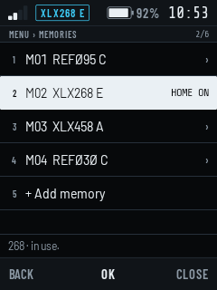
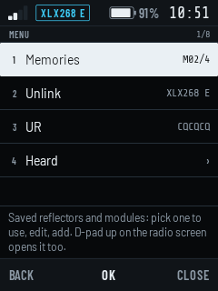
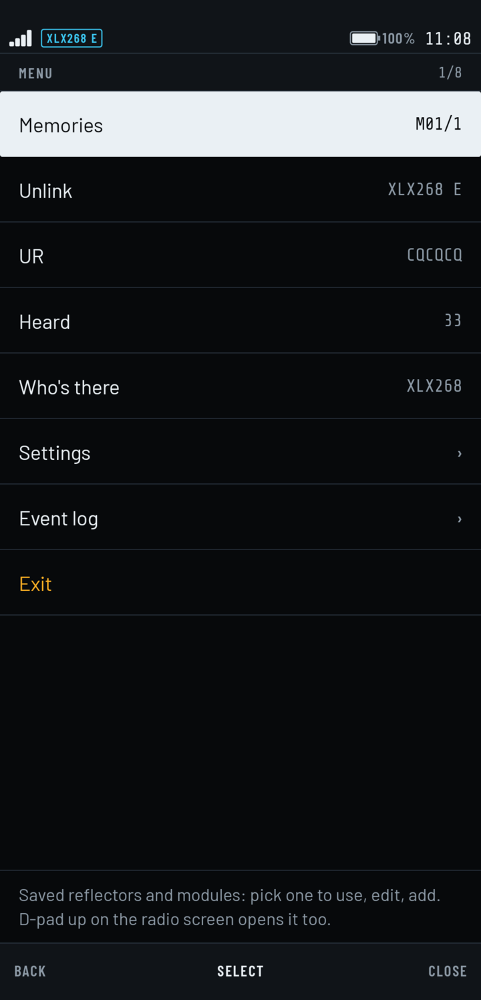

M01·DPLUS
D-STAR on the radio you already carry
VoxDSTAR links an Android push-to-talk radio or a phone to D-STAR reflectors. You hear every over with the caller's callsign and talk on the side key. The AMBE codec runs in the app, so there's no dongle and no hotspot.
- REFLECTORS
- REF · XLX · XRF · DCS
- CODEC
- AMBE, on the device
- HEARD ON THE AIR
- REF · XLX
M02·DPLUS·HOME
Nothing between the microphone and the reflector
D-STAR voice is AMBE, a codec that usually lives in a chip: in the radio, in a USB dongle, or behind a hotspot. VoxDSTAR runs it in software using xombe, an independent open implementation, and speaks the reflector protocols itself.
- Microphone
The radio's own, a headset or Bluetooth.
- AMBE 2400
Encoded on the device, 20 ms at a time.
- DPlus · DExtra · DCS
Linked, kept alive and redialled by the app.
- Reflector
REF, XLX, XRF or DCS, over any data connection.
The two shaded stages run inside VoxDSTAR.
Not neededDV DONGLEHOTSPOTD-STAR RADIO
- 1Encode, HYT-P503.4–3.9 MS
Per 20 ms frame: about a fifth of one core on a 32-bit radio.
- 2Encode, Pixel 92.0 MS
Per 20 ms frame. Decoding takes under half a millisecond on both.
M03·DPLUS
Keys first. Touch is the fallback
On a radio, your thumb already knows where everything is. VoxDSTAR uses the side PTT and the channel knob, and learns any other key you press for it.
- 1PTTF2 · SIDE
Hold to talk, or latch it: one tap to start the over, one to end it.
- 2KnobF5 · F6
Steps your memories or the modules, and relinks once you stop turning.
- 3Learn a keyPRESS IT
Bind PTT, step, link, menu, call-back and replay to whichever key you press.
- 4HeadsetWIRED · BT
A headset or Bluetooth media button can key PTT.
- 5Never by accidentTX OFF
PTT waits while a station is talking, and the TX time-out warns you before it cuts in.

M04·DPLUS
Screen off. Still on the air
The link stays up with the radio in your pocket. Calls come through and PTT still works. A call can wake the screen, and so can keying up.
- 1Wake on RX5 S
A call heard with the screen off lights it, over the lock screen.
- 2Wake on TXON
Pressing PTT lights the screen and holds it on while you talk.
- 3Link lost2 S … 1 MIN
A dropped link is redialled, at once when the network comes back.
- 4Start at bootON · OFF
Switch the radio on and it links by itself. Android lets it listen until you open the app once.
Callsign, timer and reception quality while you listen.
Red only while you transmit, so it's never in doubt.
Example callsigns.

M05·DPLUS
Your reflectors, a turn of the knob apart
Keep the reflectors and modules you use as memories, mark one as Home, and step through them with the knob. Need a new one? Find it in the reflector lists without typing an address.
- 1MemoriesM01 …
Reflector, module, name. Return home after a quiet spell.
- 2Find a reflectorREF · XRF · XLX
The public REF, XRF and XLX lists, fetched when you ask.
- 3Who's thereXLX
Reads an XLX dashboard: modules in use, their names, who's linked and who was heard last.
- 4URCQCQCQ
CQ, Echo, Unlink, Info, or a callsign. Call back the last station heard in one press.
- 5HeardREPLAY
The last ten overs kept in memory, to play again if you missed one.
- 6MoreON TEST
Watch up to three extra modules, D-PRS positions, callsign routing over ircDDB, voice or Morse announcements.

M06·DPLUS
Made on a 240-pixel screen. Fine on a phone
VoxDSTAR was designed for the smallest screen first: a Hytera HYT-P50 at 240 × 320. Phones get the same display with room to spare and a PTT key you can reach.
- Hytera HYT-P50ANDROID 12 · 32-BIT
Where it's used daily. Side PTT, knob, and the home-screen card shows the reflector and who's talking.
- Smartship m3_hANDROID 9 · 32-BIT
Runs as is. PTT, knob and side keys arrive the way the firmware sends them.
- Android phonesANDROID 8.0 AND UP
Tested on a Pixel 9. On-screen PTT, or a headset button.


- 1LanguagesEN · PT
English and Portuguese, or whatever the radio is set to.
- 2DisplayNIGHT · DAY
A dark screen for indoors, a light one that reads in direct sun.
- 3Share settingsQR
Your callsign and memories as a QR code or a link, to set up a second radio.
M07·UR
Install it and call CQ
Get the APK from GitHub and install it on your radio or phone. Put in your callsign, pick a reflector, and you're on the air.
ANDROID 8.0+ · ARM 32/64-BIT, x86-64
- 1A licence and a callsignREQUIRED
You transmit on amateur radio networks, so the usual rules apply.
- 2REF reflectorsREGISTERED
REF reflectors only accept callsigns registered in the D-STAR gateway system. VoxDSTAR signs in for you, like a hotspot does. XLX usually needs nothing.
- 3A data connectionWI-FI · MOBILE
Any connection that reaches the reflector.
Linking and two-way contacts are confirmed on REF and XLX reflectors. DCS links, D-PRS positions, callsign routing and watched modules are built in and are still being tried on the air.
VoxDSTAR is an independent project by CT7BLE. It isn't affiliated with or endorsed by ICOM, JARL or DVSI; "D-STAR" names the protocol it speaks. The AMBE codec is xombe, an independent open-source implementation.